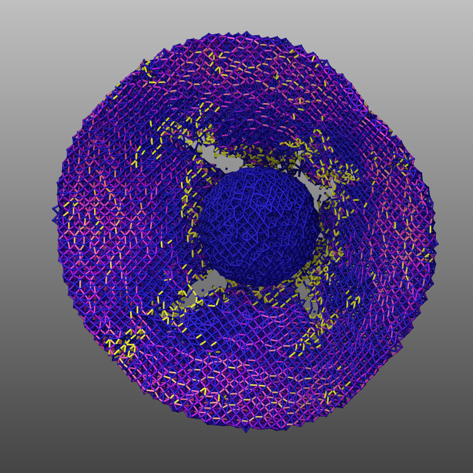

\(\renewcommand{\AA}{\text{Å}}\)
10.5.5. Bonded particle models
The BPM package implements bonded particle models which can be used to simulate mesoscale solids. Solids are constructed as a collection of particles, which each represent a coarse-grained region of space much larger than the atomistic scale. Particles within a solid region are then connected by a network of bonds to model solid elasticity. There are many names for methods that are based on similar (or equivalent) capabilities to those in this package, including, but not limited to, cohesive beam models, bonded DEMs, lattice spring models, mass spring models, and lattice particle methods.
Unlike traditional bonds in molecular dynamics, the equilibrium bond length can vary between bonds. Bonds store the reference state. This includes setting the equilibrium length equal to the initial distance between the two particles, but can also include data on the bond orientation for rotational models. This produces a stress-free initial state. Furthermore, bonds are allowed to break under large strains, producing fracture. The examples/bpm directory has sample input scripts for simulations of the fragmentation of an impacted plate and the pouring of extended, elastic bodies. See (Clemmer) for more general information on the approach and the LAMMPS implementation. Example movies illustrating some of these capabilities are found at https://www.lammps.org/movies.html#bpmpackage.
Bonds can be created using a read data or create bonds command. Alternatively, a molecule template with bonds can be used with fix deposit or fix pour to create solid grains.
In this implementation, bonds store their reference state when they are first computed in the setup of the first simulation run. Data is then preserved across run commands and is written to binary restart files such that restarting the system will not reset the reference state of a bond. Bonds that are created midway into a run, such as those created by pouring grains using fix pour, are initialized on that timestep.
Currently, there are three types of bonds included in the BPM package. The first bond style, bond bpm/spring, only applies pairwise, central body forces. Point particles must have bond atom style and may be thought of as nodes in a spring network. An optional multibody term can be used to adjust the network’s Poisson’s ratio. The bpm/spring/plastic bond style is similar except it adds a plastic yield strain. Alternatively, the third bond style, bond bpm/rotational, resolves tangential forces and torques arising with the shearing, bending, and twisting of the bond due to rotation or displacement of particles. Particles are similar to those used in the granular package, atom style sphere. However, they must also track the current orientation of particles and store bonds, and therefore use a bpm/sphere atom style. This also requires a unique integrator fix nve/bpm/sphere which numerically integrates orientation similar to fix nve/asphere.
In addition to bond styles, a new pair style pair bpm/spring was added to accompany the bpm/spring bond style. By default, this pair style is simply a hookean repulsion with similar velocity damping as its sister bond style, but optional arguments can be used to modify the force.
Bond data can be output using a combination of standard LAMMPS commands.
A list of IDs for bonded atoms can be generated using the
compute property/local command.
Various properties of bonds can be computed using the
compute bond/local command. This
command allows one to access data saved to the bond’s history,
such as the reference length of the bond. More information on
bond history data can be found on the documentation pages for the specific
BPM bond styles. Finally, this data can be output using a dump local
command. As one may output many columns from the same compute, the
dump modify colname option may be used to provide
more helpful column names. An example of this procedure is found in
/examples/bpm/pour/. External software, such as OVITO, can read these dump
files to render bond data.
Added in version 4Jul2026.
The compute bond/local property can also be
visualized using dump image to color bonds by
property using a color map. The /examples/GRAPHICS/in.bpm.fracture
example file shows how such a visualization can be constructed.

As bonds can potentially be broken between neighbor list builds, BPM bond styles may place restrictions on the special_bonds command. There are three possible scenarios which determine how pair interactions between bonded particles and special bond weights work.
The first option is the simplest. If bonds cannot break, then one can use any special bond settings to control pair forces. Namely, this is accomplished by setting the break keyword to no. Note that a zero coul weight for 1-2 bonds can be used to exclude bonded atoms from the neighbor list builds
special_bonds lj 0 1 1 coul 0 1 1
This can be useful for post-processing, or to determine pair interaction properties between distinct bonded particles.
If bonds can break, the second scenario is if pair forces are overlaid on top of bond forces such that atoms can simultaneously exchange both types of forces. This is accomplished by setting the overlay/pair keyword present in all bpm bond styles to yes. This case requires the following special bond settings
special_bonds lj/coul 1 1 1
Note that this scenario does not update special bond lists when bonds break, hence why fractional weights are not allowed. Whether or not two particles are bonded has no bearing on pair forces.
In the third scenario, bonds can break but pair forces are disabled between bonded particles. This is the default behavior of BPM bond styles. Unlike bond quartic, pair forces are not removed by subtracting pair forces during the bond computation, but rather by dynamically updating the 1-2 special bond list. To do this, LAMMPS requires newton bond off such that all processors containing an atom know when a bond breaks. Additionally, one must use the following special bond settings
special_bonds lj 0 1 1 coul 1 1 1
These settings accomplish two goals. First, they turn off 1-3 and 1-4 special bond lists, which are not currently supported for breakable BPMs. As BPMs often have dense bond networks, generating/updating 1-3 and 1-4 special bond lists can be expensive. By setting the lj weight for 1-2 bonds to zero, this turns off pairwise interactions. Even though there are no charges in BPM models, setting a nonzero coul weight for 1-2 bonds ensures all bonded neighbors are still included in the neighbor list in case bonds break between neighbor list builds.
To monitor the fracture of bonds in the system, all BPM bond styles have the ability to record instances of bond breakage to output using the dump local command. Since one may frequently output a list of broken bonds and the time they broke, the dump modify option header no may be useful to avoid repeatedly printing the header of the dump file. An example of this procedure is found in /examples/bpm/impact/. Additionally, one can use compute nbond/atom to tally the current number of bonds per atom.
See the Howto page on broken bonds for more information.
While LAMMPS has many utilities to create and delete bonds, only the following are currently compatible with BPM bond styles:
Note
The create_bonds command requires certain
special_bonds settings. To subtract pair
interactions, one will need to switch between different special_bonds
settings in the input script. An example is found in
examples/bpm/impact.
(Clemmer) Clemmer, Monti, Lechman, Soft Matter, 20, 1702 (2024).